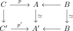
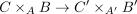
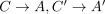
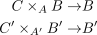
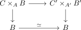
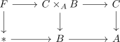
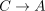
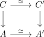

induced map between pullbacks of kan complexes as weak equivalence
1. Proposition
Given a commutative diagram of Kan complexes

where  are kan fibrations
are kan fibrations
Then the induced maps of pullbacks

is a <weak equivalence> Since

are fibrations, so are
(cf. fibration under pullback)
Furthermore we have a commutative diagram

It suffices to show that the maps on the fibres are weak equvialences.
the fibres sit in pullback diagrams

then  is the fibre over
is the fibre over

Look at

where the vertical maps are fibrations.
Then the induced maps on fibres are weak equivalences
Therefore we are done